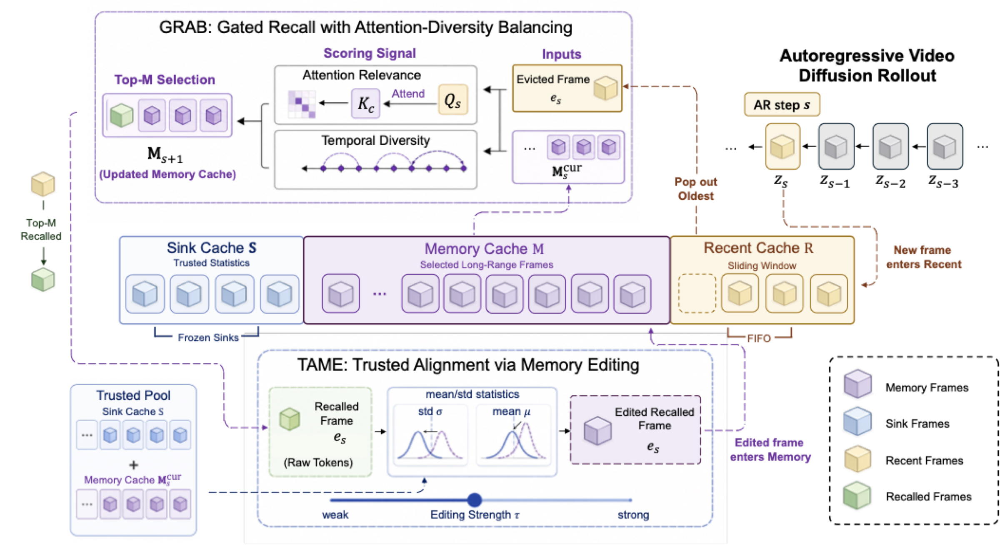

A training-free and plug-and-play KV-cache policy that enables stable, minute-level autoregressive video generation by combining gated relevance-diversity recall (GRAB) with trusted statistical alignment (TAME).
Three properties that make TetherCache an attractive component for long video systems.
No fine-tuning or parameter changes. Drop-in replacement of the KV-cache policy at inference time.
Reduces ΔQuality Drift from 7.84 to 1.33 on 240s generation, suppressing color shifts, noise, and identity drift.
Less than 6% latency overhead over the baseline; reuses the original KV-cache tensor with light metadata.
TetherCache reinterprets the fixed KV cache as three contiguous regions — Sink (trusted early frames), Memory (selective long-range recall), and Recent (sliding window) — and equips it with two complementary mechanisms.

For every evicted recent frame, GRAB re-scores the entire memory plus the candidate using a gated score combining attention-based relevance and temporal diversity. This keeps memory informative yet temporally spread, instead of being filled with recent neighbors. Old memory entries can be demoted when a more useful candidate appears.
Newly admitted KV tokens are partially aligned to the per-head, per-channel statistics of a trusted pool (sink + existing memory). This tethers drifted historical features back to a stable distribution, preventing polluted context from corrupting future attention.
For each prompt, we show the Self-Forcing baseline (left) and TetherCache (Ours) (right). Compared with the baseline, our method better preserves visual quality, object identity, and temporal coherence over long autoregressive rollouts. Hover or click play to compare.
Comparison of different variants: baseline (Self Forcing), without TAME, and full TetherCache.